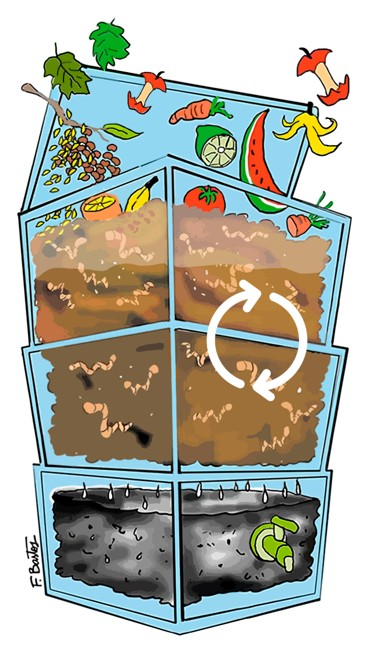
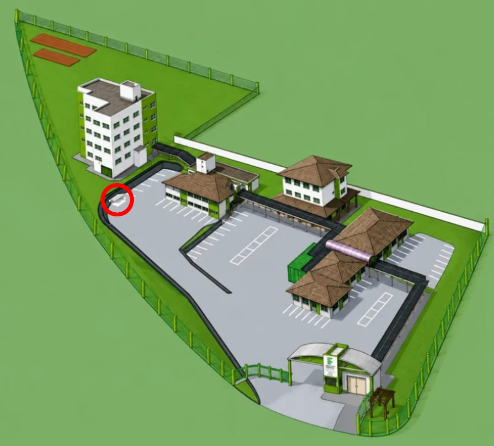

Introdução
A vermicompostagem é um processo biológico de decomposição da matéria orgânica realizado por minhocas e microrganismos onde restos de frutas, verduras, legumes, borra de café, cascas de ovos e outros resíduos orgânicos são consumidos pelas minhocas e transformados em húmus, um composto rico em nutrientes que melhora a qualidade do solo. Além do húmus, o processo também produz um líquido conhecido como biofertilizante, que pode ser utilizado na adubação de plantas.
Funcionamento
1. Montagem da composteira
No depósito do estacionamento do bloco F, montamos um sistema com três baldes empilhados. Os baldes possuem furos para permitir a circulação das minhocas e o escoamento do biofertilizante líquido até o reservatório inferior.
2. Decomposição
Os resíduos orgânicos são colocados no balde superior. Microrganismos iniciam a decomposição do material, que então é consumido pelas minhocas, produzindo húmus e biofertilizante de forma natural.
3. Produção de húmus
O húmus e o biofertilizante produzidos são recolhidos e utilizados na horta do IFSC. Quando o balde superior enche, ele é trocado com o balde intermediário para reiniciar o ciclo de compostagem.

Localização
Nosso projeto está localizado no depósito do estacionamento do bloco F do IFSC, junto às composteiras feitas por outros estudantes. O local foi escolhido por oferecer um ambiente adequado para a instalação e manutenção da vermicomposteira. Antes da instalação, o espaço passou por um processo de limpeza, pintura e organização. Os fertilizantes produzidos são destinados à horta do IFSC, localizada ao lado direito do bloco F.

Alunos envolvidos no projeto
Projeto desenvolvido por estudantes do Módulo V do Curso Técnico em Desenvolvido de Sistemas Integrado ao Ensino Médio, pela disciplina de Oficina de Integração III.
Enzo Brancher Maragno
Heitor Gromovski
Mateus Furlan Krutschener
Pedro Henrique Mignoni Franz
Professores Orientadores
Alencar Migliavacca
Miguel Debarba
Liane Beatriz Gerhardt